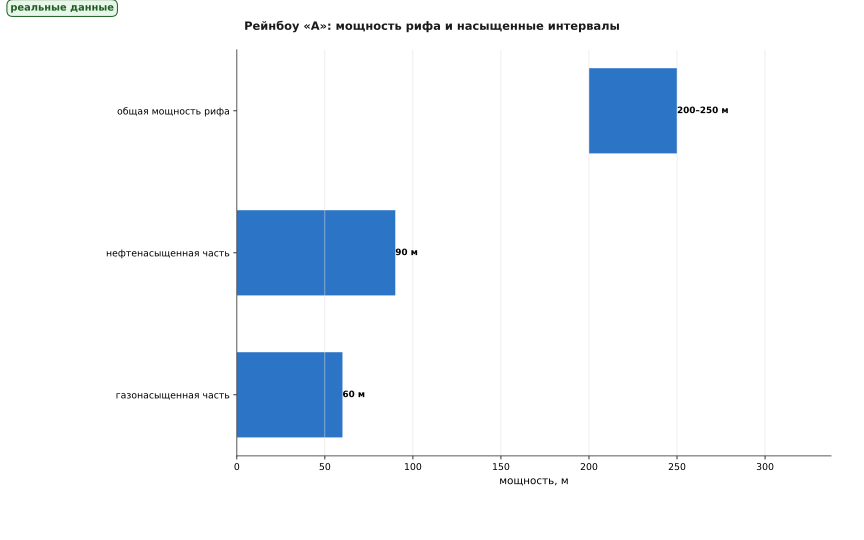

Путь › Где в породе пустоты и как устроен купол › Шаг 17 из 56
Из чего состоит риф Рейнбоу «А»
В книге: «СТРОЕНИЕ РИФОВЫХ РЕЗЕРВУАРОВ» стр. 205, 207
Опирается на: шаг 16 «Когда лучший коллектор в центре рифа» (предпосылка), шаг 16 «Когда лучший коллектор в центре рифа» (пример)
Суть
Рейнбоу «А» в Канаде — хорошо изученный островершинный риф мощностью 200–250 м и диаметром около 2 км.
Из его мощности 90 м насыщены нефтью и 60 м — газом.
Пустоты в нём разные: меж- и внутриформенные, мелкие каверны-ваги, пустоты-шаблоны и трещины; фации — ядро и околорифовый шлейф.
Пороговая идея. Форма рифа, заполнение и типы пустот — разные признаки одного резервуара. модель
Как это работает
Пример резервуара
Пример автора — резервуар хорошо изученного рифа Рейнбоу «А» в Канаде, рис. 10.2 книги. стр. 205
«В качестве примера на рис. 10.2 приведены данные по резервуару хорошо изученного рифа Рейнбоу «А» в Канаде [Langton, Chin, 1968].»
Геометрия
Это пиннакл — островершинный риф. Его общая мощность 200–250 м. Из них 90 м насыщены нефтью и 60 м — газом. стр. 205
«Это островершинный риф (пиннакл) общей мощностью 200–250 м»
«общей мощностью 200–250 м, из которых 90 м нефтенасыщены»
«из которых 90 м нефтенасыщены и 60 м газонасыщены»

В плане риф округлый, диаметр около 2 км. стр. 205, 207
«нефтенасыщены и 60 м газонасыщены; округлый в»
«с диаметром около 2 км.»
Какие пустоты
Пустоты есть межформенные — между организмами-строителями — и внутриформенные — внутри их остатков. Есть мелкие каверны, которые называют вагами. стр. 207
«Пустотное пространство меж- и внутриформенное, имеются мелкие каверны (ваги)»
«имеются мелкие каверны (ваги), пустоты-шаблоны (молдик), трещины.»
Есть и пустоты-шаблоны — молдик: они повторяют форму исчезнувшего компонента породы. И ещё — трещины. стр. 207
«имеются мелкие каверны (ваги), пустоты-шаблоны (молдик), трещины.»
«имеются мелкие каверны (ваги), пустоты-шаблоны (молдик), трещины.»
Фации
В отложениях рифа выделены две основные фации: ядро рифа и околорифовый шлейф. Фация и тип пустоты — разные метки: одна говорит об обстановке, другая о характере пустот. стр. 207
«В отложениях рифа выделено две основные фации – ядра рифа и околорифового шлейфа.»
Разбор примеров из книги
Геометрия и фации Рейнбоу «А» стр. 205
Условие. В Канаде исследован островершинный риф Рейнбоу «А».
- Отметить общую мощность 200–250 м и диаметр около 2 км.
- Отдельно выделить 90 м нефтенасыщенной и 60 м газонасыщенной мощности.
- Описать меж- и внутриформенные пустоты, мелкие каверны, пустоты-шаблоны и трещины.
Итог. Риф округлый в плане. В породах выделены фации ядра и околорифового шлейфа.
Цифры и условия
- Общая мощность Рейнбоу «А» — 200–250 м. стр. 205
- Нефтенасыщено 90 м, газонасыщено 60 м. стр. 205
- Диаметр рифа около 2 км, в плане он округлый. стр. 205, 207
Что это значит для данных модель
Геометрия, наполнение, тип пустот и фация — отдельные поля описания.
- Вход
- Размер тела, нефтенасыщенные и газонасыщенные интервалы, описание пород и пустот.
- Выход
- Согласованное описание резервуара.
- Где ломается
- Мощности интервалов не дают карты насыщения.
- гипотеза Сравнивать распределение типов пустот внутри каждой фации.
Где здесь ручной труд специалиста
- Входные данные
- Описания пустот, фаций, размеров и насыщения.
- Ручные шаги
- Разнести признаки по полям, затем сопоставить интервалы с фациями.
- Точки суждения
- Пустота между формами, внутри формы или пустота-шаблон?
- Время
- Сопоставление зависит от подробности исходных описаний.
- Типичные ошибки
- Выдавать толщину насыщенного интервала за мощность всего рифа.
Аналогия модель
Разные свойства резервуара — как поля одного объекта данных.
Где аналогия перестаёт работать: Типы пустот могут сосуществовать в одном образце, а границы фаций и насыщения не сводятся к одной границе записи.
Глубже
Пустота и её положение модель
Название пустоты отвечает на вопрос о её характере, а название фации — об обстановке образования породы. Эти метки не заменяют друг друга.
Новые понятия
- риф (reef)
- Органогенное карбонатное тело, возвышавшееся над окружающим дном. модель
- резервуар (reservoir)
- Тело из пород, в пустотах которых могут находиться и перемещаться жидкости или газы. модель
- профильный разрез
- Изображение строения объекта в вертикальной плоскости вдоль заданной линии. модель
- пиннакл (pinnacle reef)
- Островершинный риф. стр. 205
- мощность
- Толщина толщи пород. модель
- нефтенасыщенность
- Заполнение пустот нефтью. модель
- газонасыщенность
- Заполнение пустот газом. модель
- фация (facies)
- Горная порода или группа пород с характерными признаками обстановки их образования. модель
- ядро
- Центральная часть рифового массива. модель
- шлейф
- Полоса отложений из материала, накопленного рядом с массивом. модель
- межформенные пустоты
- Промежутки между построившими риф организмами или их остатками. модель
- внутриформенные пустоты
- Полости внутри каркасных форм или остатков организмов. модель
- ваги (vugs)
- Мелкие каверны, то есть полости в породе. стр. 207
- молдик (moldic pore)
- Пустота-шаблон, повторяющая форму исчезнувшего компонента породы. стр. 207
- трещина (fracture)
- Разрыв в породе. модель
Проверь себя
м
Верный ответ: 90 м
Из общей мощности 200–250 м нефтенасыщены 90 м и газонасыщены 60 м. Где это в тексте (стр. 205) →
Вставьте пропущенное слово.
Пустоты-шаблоны, повторяющие форму исчезнувшего компонента породы, называют .
Верный ответ: Пустоты-шаблоны, повторяющие форму исчезнувшего компонента породы, называют [молдик].
Ваги — мелкие каверны, пиннакл — островершинный риф, шлейф — фация. Где это в тексте (стр. 207) →
Верный ответ: Межформенные и внутриформенные; Мелкие каверны (ваги); Трещины
Автор перечисляет меж- и внутриформенные пустоты, ваги, молдик и трещины. Где это в тексте (стр. 207) →
Источник
Все утверждения шага с дословной цитатой автора и страницей книги (по PDF).
Рейнбоу «А» — хорошо изученный рифовый резервуар в Канаде. наблюдение
«В качестве примера на рис. 10.2 приведены данные по резервуару хорошо изученного рифа Рейнбоу «А» в Канаде [Langton, Chin, 1968].»
Рейнбоу «А» — островершинный риф (пиннакл) мощностью 200–250 м. наблюдение
«Это островершинный риф (пиннакл) общей мощностью 200–250 м»
Нефтью насыщены 90 м мощности рифа. наблюдение
«общей мощностью 200–250 м, из которых 90 м нефтенасыщены»
Газом насыщены 60 м мощности рифа. наблюдение
«из которых 90 м нефтенасыщены и 60 м газонасыщены»
Риф округлый в плане. наблюдение
«нефтенасыщены и 60 м газонасыщены; округлый в»
Диаметр рифа — около 2 км. наблюдение
«с диаметром около 2 км.»
Пустоты расположены между формами и внутри них. наблюдение
«Пустотное пространство меж- и внутриформенное, имеются мелкие каверны (ваги)»
Есть мелкие каверны, которые автор называет вагами. наблюдение
«имеются мелкие каверны (ваги), пустоты-шаблоны (молдик), трещины.»
В породах также есть пустоты-шаблоны — молдик. наблюдение
«имеются мелкие каверны (ваги), пустоты-шаблоны (молдик), трещины.»
В пустотное пространство входят и трещины. наблюдение
«имеются мелкие каверны (ваги), пустоты-шаблоны (молдик), трещины.»
Две основные фации — ядро рифа и околорифовый шлейф. наблюдение
«В отложениях рифа выделено две основные фации – ядра рифа и околорифового шлейфа.»
На этот шаг опираются: шаг 18 «Свойства ядра и крыльев рифа Рейнбоу».